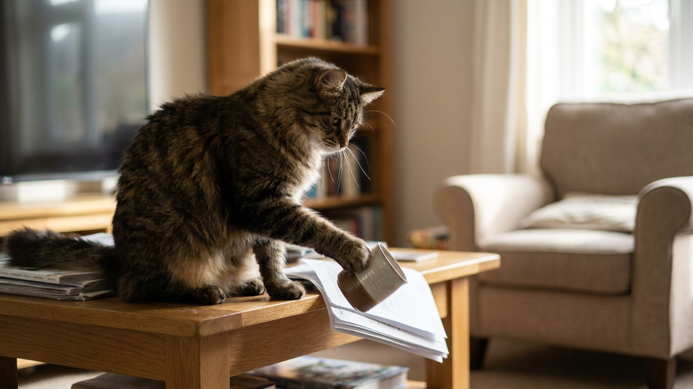

Кошка подходит к краю стола, смотрит вам в глаза и методично сбрасывает кружку. Потом ручку. Потом телефон. Выглядит как издевательство, но за этим поведением стоят вполне понятные мотивы. Разобраться в них — значит найти решение, которое сработает без крика и без борьбы.
🐾 Здоровье питомца под контролем
AI-ветеринар, дневник здоровья и персональные советы для вашего питомца — установите AnimaLife бесплатно.
Кошки не мстят. Это важно понять с самого начала. Кошачий мозг не выстраивает логические цепочки «он меня наказал — значит я уроню его кружку». Это человеческое мышление, которое мы ошибочно проецируем на питомца.
Кошка сбрасывает вещи по трём основным причинам: охотничий инстинкт, запрос внимания, или исследование пространства. Ни одна из них не является «злым умыслом».
Кошка — хищник, который охотится на мелкую движущуюся добычу. Её лапа устроена так, чтобы проверять, «живой» ли объект: нажать, подтолкнуть, посмотреть на реакцию. Предмет на краю стола — идеальная мишень. Она двигается от нажатия, а затем «убегает» (падает) — это чистая охота с точки зрения кошачьего мозга.
Что работает:
Кошка быстро усваивает: когда я сбрасываю вещь — хозяин немедленно реагирует. Смотрит на меня. Говорит что-то (пусть и раздражённо). Подходит. С точки зрения кошки — это успех. Она получила то, что хотела.
Чем ярче вы реагируете — тем сильнее закрепляется поведение. Каждый раз, когда вы вскакиваете и кричите «нет!» — вы буквально обучаете кошку этому трюку.
Что работает:
Кошка, которой скучно, будет создавать себе занятие из всего доступного. Если в квартире нет ни когтеточки, ни игрушек, ни окна с интересным видом — полки с предметами становятся единственной доступной «активностью».
Что работает:
Кошка не всегда понимает, что именно произойдёт, когда она толкнёт предмет. Иногда это просто исследование физики: что будет? Упадёт? Как? Куда? Некоторые кошки делают это вполне «задумчиво», медленно толкая предмет и наблюдая за движением.
Это нормальное поведение, связанное с любопытством. Оно чаще встречается у молодых кошек и у кошек с высоким уровнем интеллектуальной активности.
Что работает:
🐾 Первая помощь — всегда под рукой
AnimaLife подскажет, что делать в тревожной ситуации с питомцем ещё до визита к врачу. Откройте в один тап.
🐾 Понравился разбор?
Подпишитесь на канал — каждый день разбираем по одному тревожному симптому у кошек и собак: что в пределах нормы, а когда пора к врачу. Подпишитесь, чтобы не пропустить разбор, который может спасти здоровье вашего питомца.
Если кошка регулярно сбрасывает вещи:
Если поведение резко усилилось и не связано с очевидными причинами (скука, отсутствие игр) — обсудите со своим ветеринаром. Иногда за изменением поведения стоит физический дискомфорт.
Различать мотивы важно, потому что стратегии разные:
Иногда на столе стоят предметы, которые убрать невозможно — монитор, клавиатура, лампа. Несколько способов защиты:
Все эти меры работают как временная защита во время активной работы над поведением, не как постоянное решение.
Небольшой процент кошек продолжают сбрасывать вещи даже после работы над поведением. Это нормально — у каждой кошки свой характер и уровень настойчивости.
В таких случаях проще принять это как особенность питомца и адаптировать быт: убирать важные вещи, держать хрупкие предметы в закрытых шкафах, обогатить среду до максимума.
Если поведение резко изменилось по интенсивности или появилось у кошки, которая раньше так не делала — обсудите со своим ветеринаром. Иногда за изменением поведения стоит физический дискомфорт.
Материал носит информационный характер и не заменяет очную консультацию ветеринара.